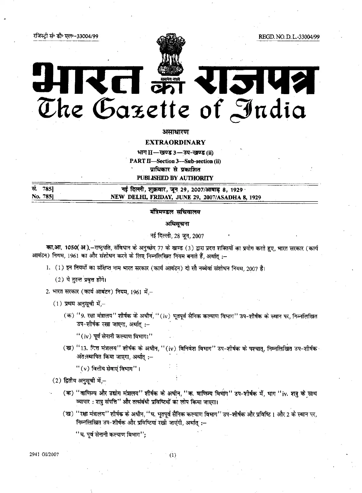
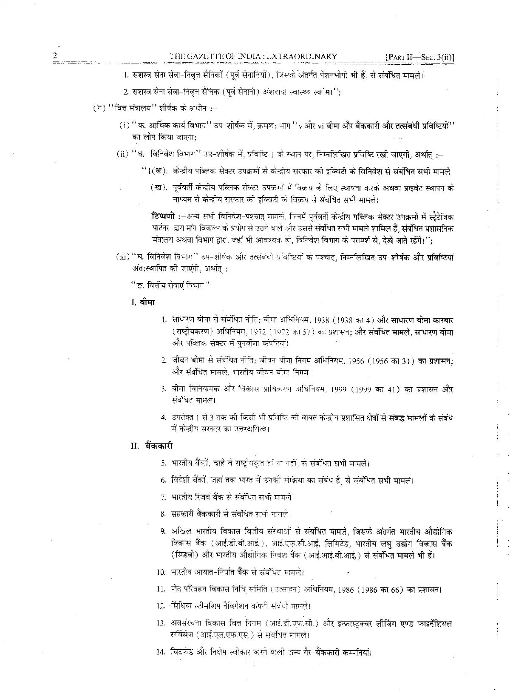
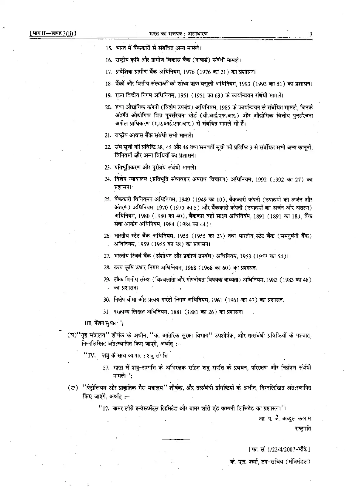
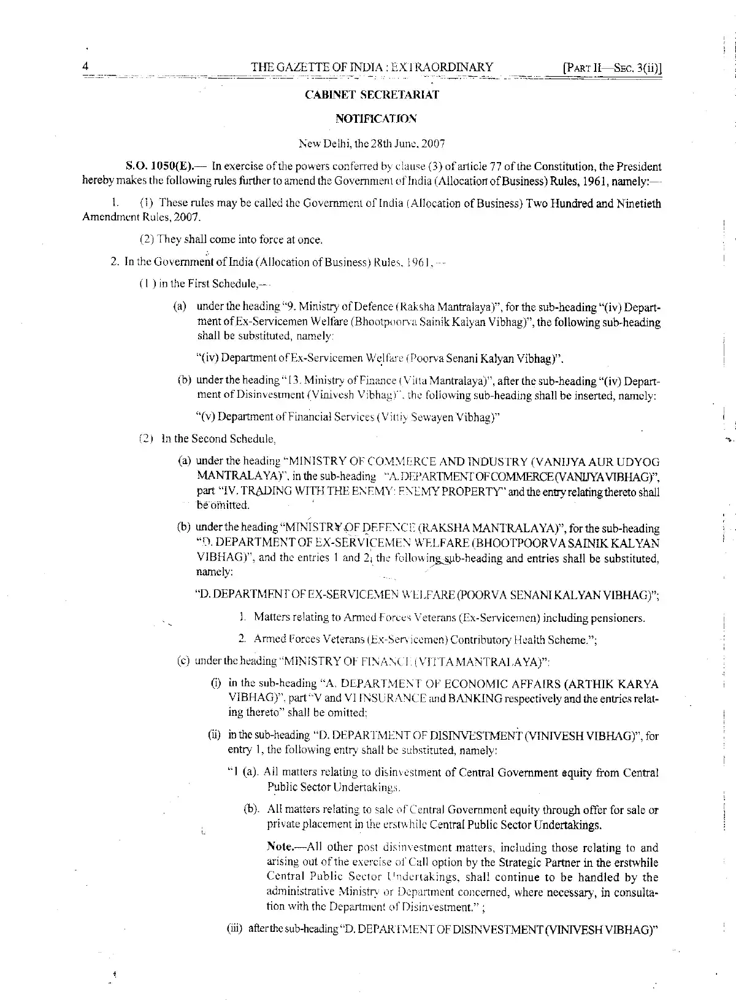
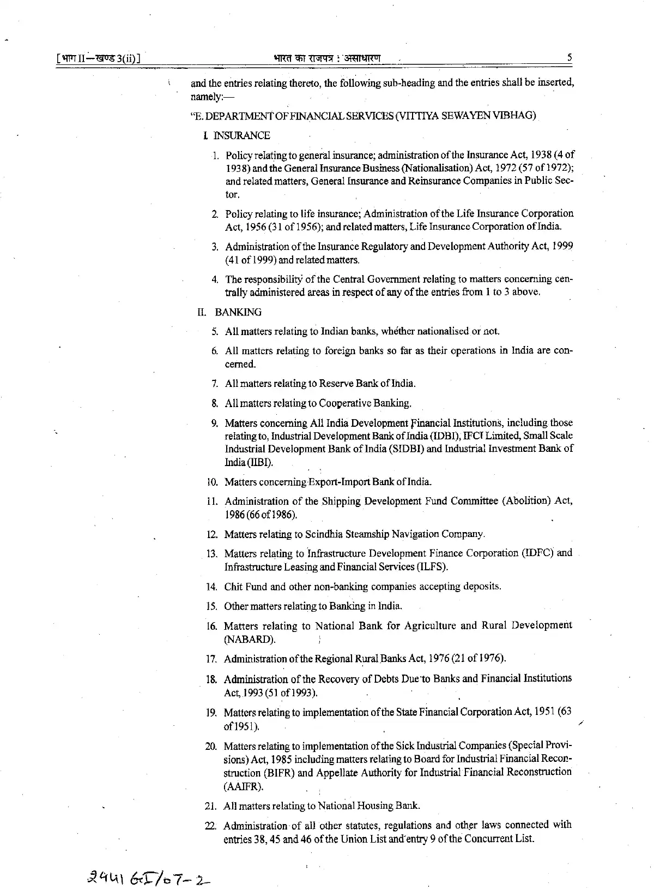
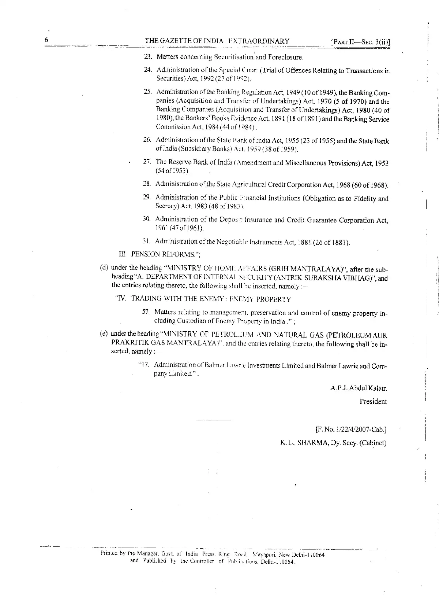

Amendment #290 (S.O. 1050(E), 2007)
9 changes: 2 to the First Schedule, 7 to the Second Schedule. 9 applied
The order, page by page
Page 1 of 6

Page 2 of 6

Page 3 of 6

Page 4 of 6

1234567Schedule 1 › Ministry of Defence › Depart- ment of Ex-Servicemen Welfare
- iv. Department of Ex-Servicemen Welfare
applied at schedule 1 › ministry 9 › department iv in the Rules after #290
after Schedule 1 › Ministry of Finance › Depart- ment of Disinvestment
- v. Department of Financial Services
applied at schedule 1 › ministry 13 › department v in the Rules after #290
Schedule 2 › MINISTRY OF COMMERCE AND INDUSTRY › DEPARTMENT OF COMMERCE › IV. TRADING WITH THE ENEMY: ENEMY PROPERTY
applied at schedule 2 › ministry MINISTRY OF COMMERCE AND INDUSTRY › department A › group_heading IV in the Rules after #290
Schedule 2 › MINISTRY OF DEFENCE › DEPARTMENT OF EX-SERVICEMEN WELFARE
- D. DEPARTMENT OF EX-SERVICEMEN WELFARE
- 1. Matters relating to Armed Forces Veterans (Ex-Servicemen) including pensioners.
- 2. Armed Forces Veterans (Ex-Servicemen) Contributory Health Scheme.
applied at schedule 2 › ministry MINISTRY OF DEFENCE › department D in the Rules after #290
Schedule 2 › MINISTRY OF FINANCE › DEPARTMENT OF ECONOMIC AFFAIRS › V. INSURANCE; Schedule 2 › MINISTRY OF FINANCE › DEPARTMENT OF ECONOMIC AFFAIRS › VI. BANKING
applied at schedule 2 › ministry MINISTRY OF FINANCE › department A › group_heading V in the Rules after #290
Schedule 2 › MINISTRY OF FINANCE › DEPARTMENT OF DISINVESTMENT › entry 1
- 1 (a). All matters relating to disinvestment of Central Government equity from Central Public Sector Undertakings.
- b. . All matters relating to sale of Central Government equity through offer for sale or private placement in the erstwhile Central Public Sector Undertakings.
- Note. All other post disinvestment matters, including those relating to and arising out of the exercise of Call option by the Strategic Partner in the erstwhile Central Public Sector Undertakings, shall continue to be handled by the administrative Ministry or Department concerned, where necessary,…
applied at schedule 2 › ministry MINISTRY OF FINANCE › department D › entry 1 in the Rules after #290
after Schedule 2 › MINISTRY OF FINANCE › DEPARTMENT OF DISINVESTMENT
- E. DEPARTMENT OF FINANCIAL SERVICES I INSURANCE
- 1. Policy relating to general insurance; administration of the Insurance Act, 1938 (4 of 1938) and the General Insurance Business (Nationalisation) Act, 1972 (57 of 1972) and related matters, General Insurance and Reinsurance Companies in Public Sector.
- 2. Policy relating to life insurance; Administration of the Life Insurance Corporation Act, 1956 (31 of 1956); and related matters, Life Insurance Corporation of India.
- 3. Administration of the Insurance Regulatory and Development Authority Act, 1999 (41 of 1999) and related matters.
- 4. The responsibility of the Central Government relating to matters concerning centrally administered areas in respect of any of the entries from 1 to 3 above.
- II. BANKING
and 28 more
- 5. All matters relating to Indian banks, whether nationalised or not.
- 6. All matters relating to foreign banks so far as their operations in India are concerned.
- 7. All matters relating to Reserve Bank of India.
- 8. All matters relating to Cooperative Banking.
- 9. Matters concerning All India Development Financial Institutions, including those relating to, Industrial Development Bank of India (IDBI), IFCI Limited, Small Scale Industrial Development Bank of India (SIDBI) and Industrial Investment Bank of India (IIBI).
- 10. Matters concerning Export-Import Bank of India.
- 11. Administration of the Shipping Development Fund Committee (Abolition) Act 1986 (66 of 1986).
- 12. Matters relating to Scindhia Steamship Navigation Company.
- 13. Matters relating to Infrastructure Development Finance Corporation (IDFC) and Infrastructure Leasing and Financial Services (ILFS).
- 14. Chit Fund and other non-banking companies accepting deposits.
- 15. Other matters relating to Banking in India.
- 16. Matters relating to National Bank for Agriculture and Rural Development (NABARD).
- 17. Administration of the Regional Rural Banks Act, 1976 (21 of 1976).
- 18. Administration of the Recovery of Debts Due to Banks and Financial Institutions Act, 1993 (51 of 1993).
- 19. Matters relating to implementation of the State Financial Corporation Act, 1951 (63 of 1951).
- 20. Matters relating to implementation of the Sick Industrial Companies (Special Provisions) Act, 1985 including matters relating to Board for Industrial Financial Reconstruction (BIFR) and Appellate Authority for Industrial Financial Reconstruction (AAIFR).
- 21. All matters relating to National Housing Bank.
- 22. Administration of all other statutes, regulations and other laws connected with entries 38, 45 and 46 of the Union List and entry 9 of the Concurrent List. } 244165/07-2
- 23. Matters concerning Securitisation and Foreclosure.
- 24. Administration of the Special Court (Trial of Offences Relating to Transactions in Securities) Act, 1992 (27 of 1992).
- 25. Administration of the Banking Regulation Act, 1949 (10 of 1949), the Banking Com- - panies (Acquisition and Transfer of Undertakings) Act, 1970 (5 of 1970) and the Banking Companies (Acquisition and Transfer of Undertakings) Act, 1980 (40 of 1980), the Bankers' Books Evidence Act, 1891 (18 of…
- 26. Administration of the State Bank of India Act, 1955 (23 of 1955) and the State Bank of India (Subsidiary Banks) Act, 1959 (38 of 1959).
- 27. The Reserve Bank of India (Amendment and Miscellaneous Provisions) Act, 1953 (54 of 1953).
- 28. Administration of the State Agricultural Credit Corporation Act, 1968 (60 of 1968).
- 29. Administration of the Public Financial Institutions (Obligation as to Fidelity and Secrecy) Act, 1983 (48 of 1983).
- 30. Administration of the Deposit Insurance and Credit Guarantee Corporation Act 1961 (47 of 1961).
- 31. Administration of the Negotiable Instruments Act, 1881 (26 of 1881).
- III. PENSION REFORMS.
applied at schedule 2 › ministry MINISTRY OF FINANCE › department E in the Rules after #290
read page break
Page 5 of 6

Page 6 of 6

89after Schedule 2 › MINISTRY OF HOME AFFAIRS › DEPARTMENT OF INTERNAL SECURITY
- IV. TRADING WITH THE ENEMY: ENEMY PROPERTY
- 57. Matters relating to management, preservation and control of enemy property including Custodian of Enemy Property in India .
applied at schedule 2 › ministry MINISTRY OF HOME AFFAIRS › department A in the Rules after #290
after Schedule 2 › MINISTRY OF PETROLEUM AND NATURAL GAS
- 17. Administration of Balmer Lawrie Investments Limited and Balmer Lawrie and Company Limited.
applied at schedule 2 › ministry MINISTRY OF PETROLEUM AND NATURAL GAS in the Rules after #290
How this document was read
From the Government of India (Allocation of Business) Rules, 1961 and their amendments, as published by the Cabinet Secretariat (cabsec.gov.in), read by orgpedia. The readings of the older scanned gazettes have known gaps.